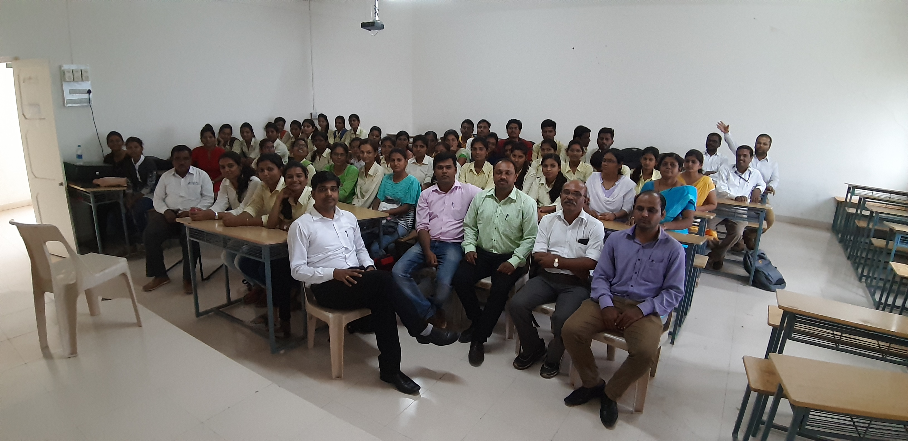
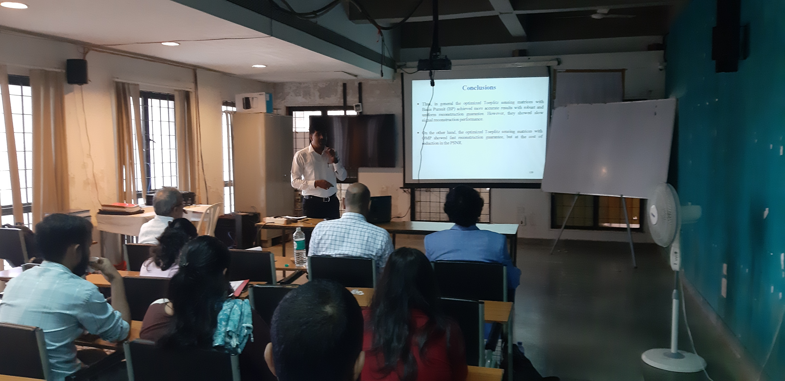
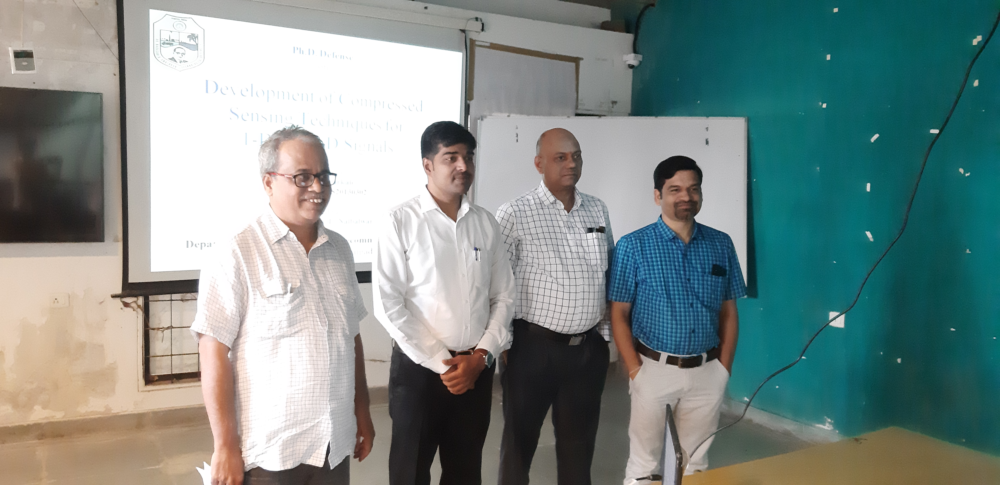

Dr. Yuvraj Parkale
Assistant Professor - PhD (E&TC), M.Tech. (E&TC)
About
Dr. Yuvraj Parkale is very young and dynamic personality. He has completed his PhD in E&TC. Now he is working as Assistant professor. Along with this his work in research is immence and vital.
My Skills
Software Proficiency
Matlab, Keil micro vision, Ride Rkit, Orcad Capture & layout, Xilinx, LABVIEW, Turbo C, Multisim, Protus
Programming languages
Embedded C, Assembly, Turbo C language, VHDL
Text Text
TExt TEXT TEXT
29+
PUBLICATIONS
PUBLICATIONS
33+
FDP/STTP Attended
FDP/STTP Attended
10+
Experience as a Reviewer
Experience as a Reviewer
15+
Teaching Experience
Teaching Experience
My Reputation
Chandler Bing. Web Designer.
Jane Doe is just awesome. I am so happy to have met her!

Chris Fox. CEO at Mighty Schools.
Jane Doe saved us from a web disaster.
Rebecca Flex. CEO at Company.
No one is better than Jane Doe.
My Portfolio


